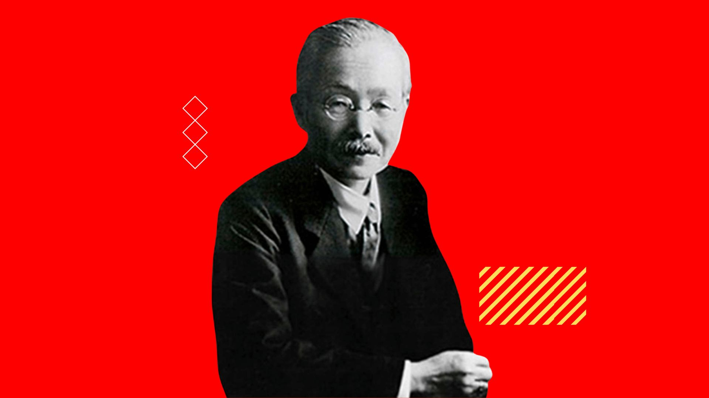
1908
Dr. Kikunae Ikeda menemukan rasa umami.
Melalui inovasi dan kualitas, kami menghadirkan produk pangan yang menemani keluarga Indonesia dalam setiap momen kehidupan.
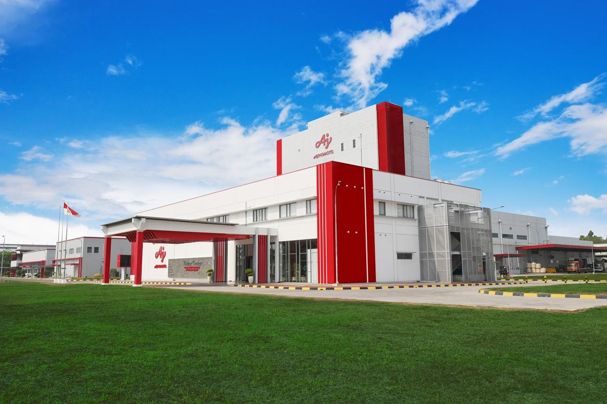
PT Ajinomoto Indonesia berkomitmen menghadirkan nilai positif bagi masyarakat melalui kegiatan usaha yang berorientasi pada konsumen, memperhatikan kualitas, serta mendukung keberlanjutan. Komitmen tersebut menjadi bagian dari upaya perusahaan untuk tumbuh dan berkembang bersama masyarakat.
Memahami kebutuhan masyarakat dalam menghadirkan produk yang relevan dan bermanfaat.
Memperhatikan mutu produk dan keamanan pangan dalam setiap proses.
Mendukung pertumbuhan usaha dengan memperhatikan masyarakat dan lingkungan.
Nilai-nilai ini menjadi dasar dalam setiap langkah kami untuk menghadirkan produk pangan berkualitas dan memberi manfaat bagi masyarakat.
Selalu memahami kebutuhan konsumen dan menghadirkan produk yang bermanfaat dalam kehidupan sehari-hari.
Menjaga mutu produk melalui proses yang terstandar dan perhatian pada keamanan pangan.
Berkomitmen terhadap lingkungan dan masyarakat untuk masa depan yang lebih baik.
Mojokerto & Karawang, Indonesia
yang berdedikasi
untuk kebutuhan keluarga Indonesia
menjangkau berbagai daerah
Berawal dari penemuan rasa umami di Jepang, Ajinomoto terus berkembang dan menghadirkan inovasi produk pangan berkualitas untuk kehidupan yang lebih baik bagi masyarakat Indonesia.


Dr. Kikunae Ikeda menemukan rasa umami.
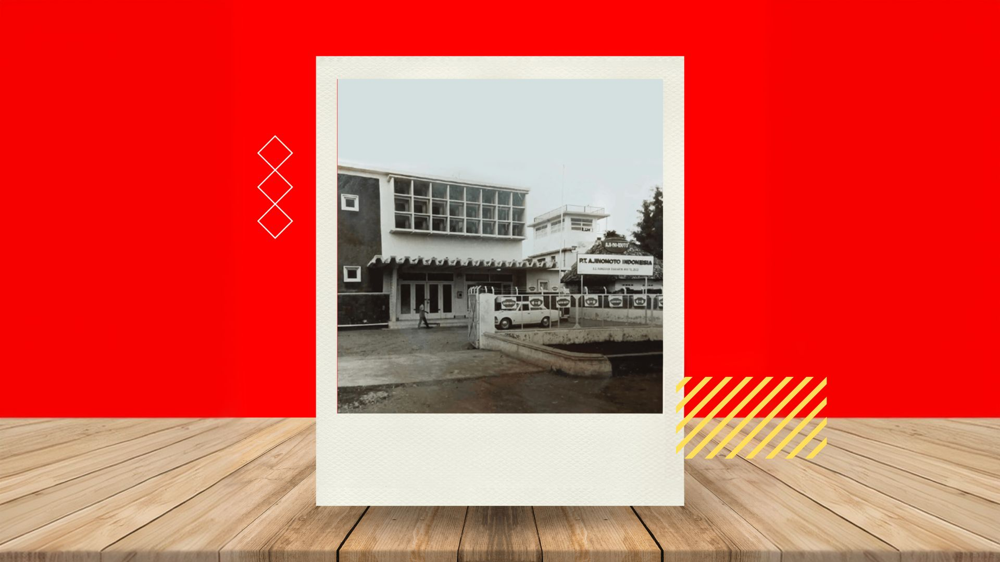
PT Ajinomoto Indonesia resmi didirikan.
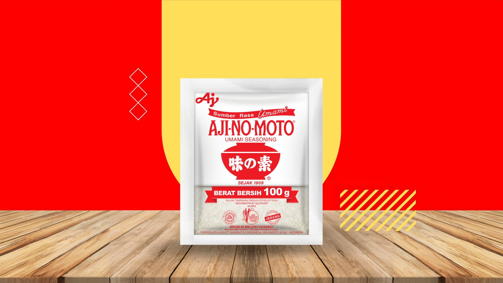
Produksi MSG secara keseluruhan dari bahan baku molase mulai dilakukan.
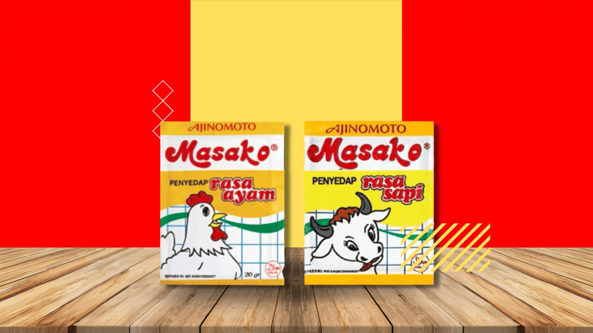
Masako mulai dijual untuk konsumen eceran.
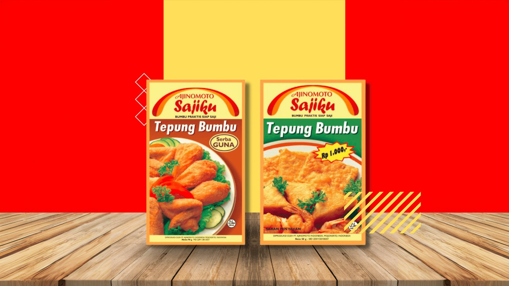
Sajiku mulai dijual.
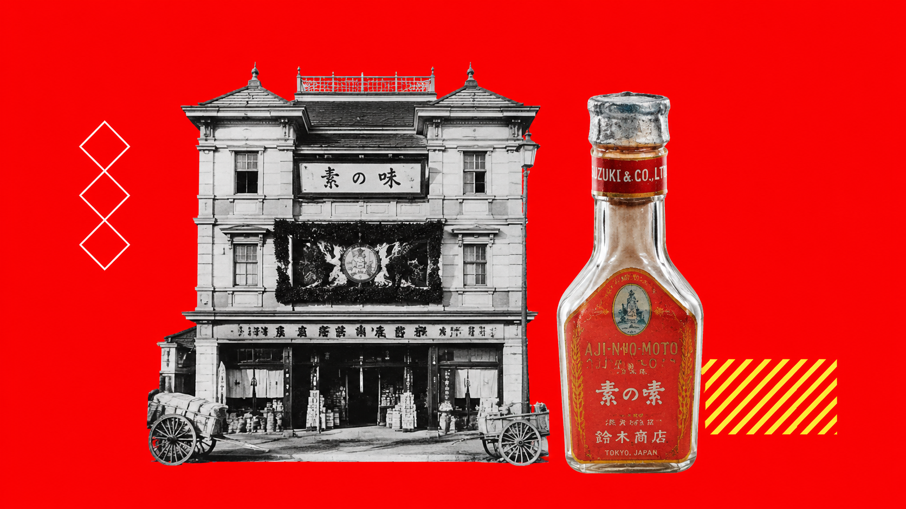
AJI-NO-MOTO pertama kali dipasarkan di Jepang.
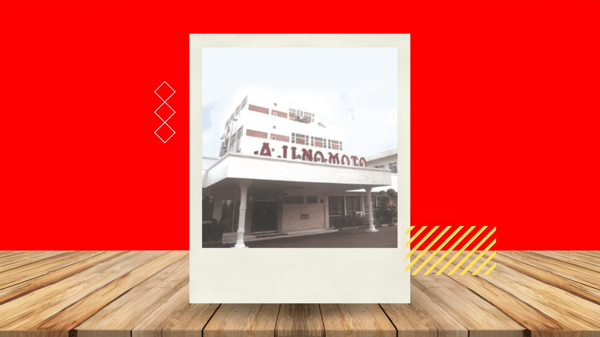
Pabrik Mojokerto mulai beroperasi dan penjualan AJI-NO-MOTO dimulai.
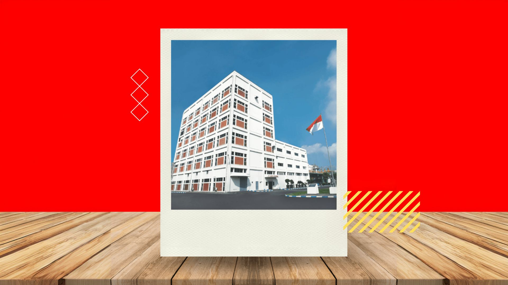
PT Ajinex International didirikan.
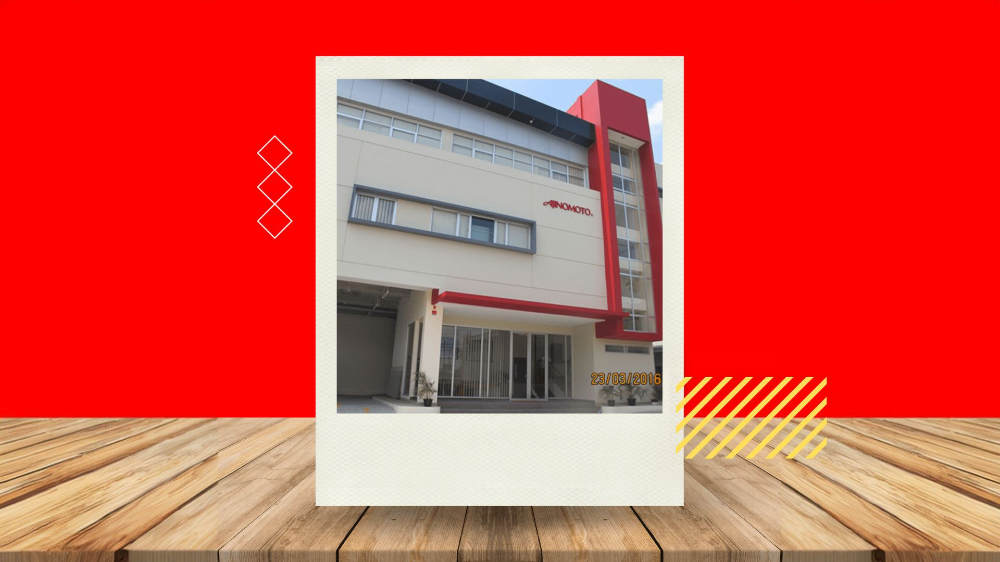
PT Ajinomoto Sales Indonesia mulai beroperasi.
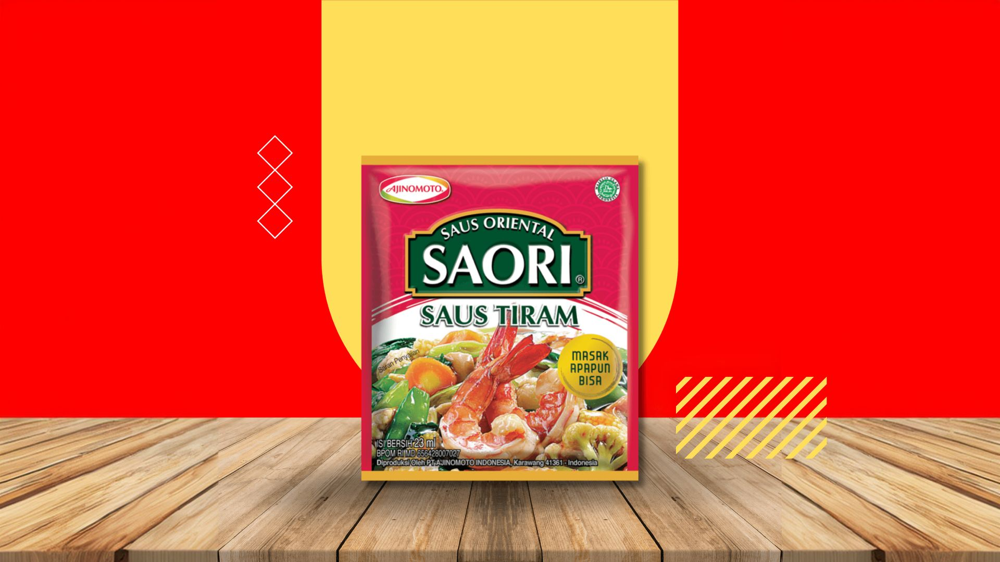
SAORI mulai dijual.
Beragam pilihan produk Ajinomoto untuk melengkapi kebutuhan memasak dan menghadirkan kelezatan dalam setiap hidangan.
Coba gunakan kata kunci atau kategori lainnya.

Jl. Raya Mlirip No.110, Gedong, Mlirip, Kec. Jetis, Kabupaten Mojokerto, Jawa Timur 61352
(0321)361710
custcare@asv.ajinomoto.com